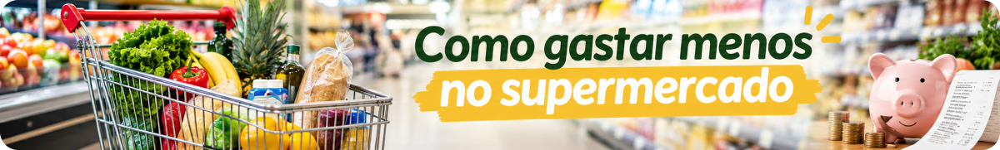
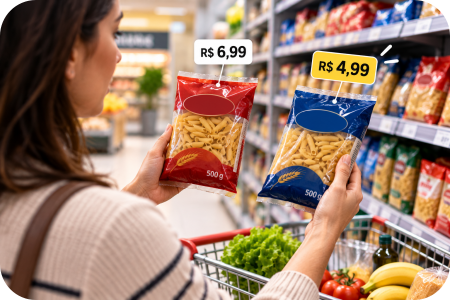
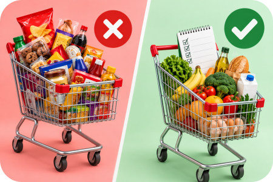

Entrar no supermercado sem planejamento é perigoso.
Você foi buscar café e papel higiênico. Volta com biscoito em promoção, três molhos, uma caixa de alguma coisa que “estava compensando” e... esqueceu o café. 😂
Economizar no supermercado não significa simplesmente comprar o produto mais barato. Significa comprar melhor e aproveitar aquilo que levou para casa.
1. Antes de sair, olhe o que você já tem
Abra a geladeira. Olhe o freezer. Dê uma conferida na despensa.
Parece óbvio, mas essa pequena atitude ajuda a evitar comprar novamente aquilo que já estava escondido no fundo do armário.
Dica da Lu: a primeira economia do supermercado pode acontecer antes mesmo de você sair de casa.
2. Faça uma lista — e use a lista 😂
Depois de olhar o que existe em casa, anote o que realmente falta.
O Guia Alimentar para a População Brasileira recomenda levar uma lista de compras ao supermercado para evitar comprar mais do que o necessário, sobretudo produtos em promoção.
Não precisa ser uma lista perfeita. Pode estar no papel ou no celular. O importante é chegar ao supermercado sabendo o que você foi buscar.
3. Promoção só é economia quando você precisava comprar
LEVE 3, PAGUE 2!
Parece ótimo. Mas você usará os três? Conseguirá consumir tudo antes do vencimento? Teria comprado aquela quantidade se não existisse a promoção?
Se a resposta for não, talvez você não tenha economizado. Você apenas gastou dinheiro antecipadamente.
O próprio Guia Alimentar chama atenção para compras além do necessário, especialmente quando há produtos em promoção.
Método Mundo LuFiNas
Antes de colocar no carrinho:

4. Nem sempre a embalagem maior é o melhor negócio
Um pacote maior pode custar menos proporcionalmente. Mas nem sempre.
Quando houver tamanhos diferentes, vale comparar o preço em relação à quantidade — por quilo, litro, unidade ou outra medida adequada.
E existe outra pergunta importante: vou realmente usar tudo?
Porque pagar menos por quilo e jogar metade fora não é economia.
5. Olhe a validade antes de pensar no desconto
Quanto maior a quantidade comprada, mais importante fica verificar o prazo de validade.
Antes de aproveitar uma oferta, pense se haverá tempo de consumir o produto dentro do prazo e nas condições indicadas na embalagem.
Promoção + validade curta + quantidade que você não consegue consumir = atenção.
6. Vale observar os alimentos da safra
O INCA recomenda optar por alimentos que estão na safra, pois tendem a ter menor preço.
Sacolões, varejões, feiras e compras diretamente de produtores também podem oferecer alternativas interessantes, dependendo da região.
Vale comparar. Nem sempre o supermercado precisa ser o único lugar da compra.

7. O barato que vai para o lixo ficou caro
Esse talvez seja um dos pontos mais importantes.
Comprar muito porque estava barato não adianta se parte da compra estragar. A redução das perdas e do desperdício de alimentos é tema de uma estratégia nacional que abrange toda a cadeia, da produção ao consumo.
Por isso, pense também nas refeições dos próximos dias. Se você sabe aproximadamente o que pretende preparar, fica mais fácil comprar quantidades compatíveis com a realidade da casa.
Checklist da Lu
☑ Veja o que já tem
☑ Faça uma lista
☑ Compare preços e quantidades
☑ Confira a validade
☑ Compre o que vai usar
Dica da Lu: economizar no supermercado não é simplesmente colocar menos coisas no carrinho. É levar para casa aquilo que será realmente usado.
Para terminar...
A etiqueta vermelha dizendo OFERTA chama atenção. Mas quem decide se aquilo é realmente uma boa compra é você.
Antes de colocar no carrinho, vale uma pergunta muito simples:
Eu preciso disso e vou usar?
Se a resposta for sim, compare e escolha. Se for não... pode deixar a promoção morar no supermercado mesmo. 😂
Fontes consultadas
Ministério da Saúde — Guia Alimentar para a População Brasileira — lista de compras, promoções e locais de compra.
Instituto Nacional de Câncer — Como ter uma alimentação saudável economizando nas compras — alimentos da safra, feiras, sacolões, varejões e produtores.
MDS — II Estratégia Intersetorial para a Redução de Perdas e Desperdício de Alimentos no Brasil — redução de perdas e desperdício da produção ao consumo.